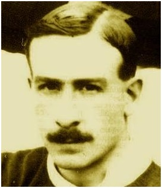
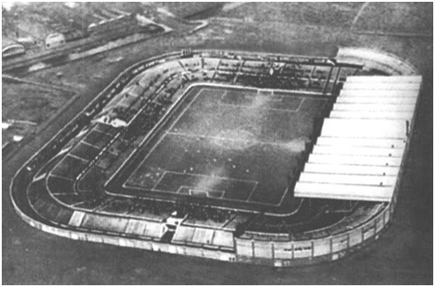

Chương 4

hông còn lo lắng về chuyện công đoàn đấu tranh, J.H. Davies tập trung tầm nhìn vào chặng đường phía trước.Manchester Unitedvừa giành liên tiếp hai danh hiệu lớn chỉ trong hai năm, tương lai chờ đón họ hẳn rất huy hoàng.Trong tương lai ấy, chắc chắn Bank Street không còn phù hợp.Cho rằng sân Bank Street là nỗi xấu hổ của CLB, Davies nung nấu ý định chuyển nhà đã từ lâu. Sau thi thu lời lớn từ việc bán điền sản ở Holford Hall[1], ông dùng lợi nhuận trên mua một lô đất tại khu Old Trafford, tuyên bố sẽ xây dựng nơi đây SVĐ hoành tráng nhất quốc gia. Vai trò kiến trúc sư thiết kế sân được giao cho Archibald Leitch, người đã xây nên các cầu trường danh tiếng khác của Đại Anh Quốc như Hampden Park, Ibrox và White Hart Lane.
Trên tờ Athletic Newssố ra ngày 8 tháng 3, 1909 có bài viết về kế hoạch xây sân Old Trafford, xin lược trích lại vài đoạn:
“Khu vực phía tây thành phố thương mại Manchester sắp trở thành thánh địa Mecca[2] của giới thể thao. Khi lá mùa thu tới bắt đầu rơi, dân nghiền bóng đá sẽ hô hào rủ nhau “về miền Tây, về miền Tây”…bởi tháng 9 này đây, Manchester United sẽ mở cửa sân bóng mới đón chào người hâm mộ…Đây sẽ là SVĐ bóng đá đẹp nhất nước Anh, với sức chứa 100000 người...Khán đài chính của sân có 12000 ghế ngồi, ngoài ra còn có 24000 chỗ đứng có mái che…Khu vực khán đài đứng lộ thiên chứa thêm được 64000 người nữa…Trong sân có đủ phương tiện như quán ăn, phòng tập thể dục, phòng chơi bi-a, phòng giặt ủi, phòng thay đồ cho cầu thủ, phòng nghỉ cho trọng tài, tất cả đều rất tân kỳ, hiện đại…Chi phí xây dựng sân ước chừng 30000 bảng”.
So với kế hoạch ban đầu, thực tế có một số thay đổi. Không vay được tiền ngân hàng, United phải dốc toàn bộ hầu bao để xây sân. Do phí tổn quá lớn khôn kham, Davies đành cho giảm sức chứa sân xuống còn 80000 người. Vậy mà chi phí cuối cùng vẫn lên tới 60000 bảng, gấp đôi dự trù. Thời điểm khánh thành sân cũng phải trì hoãn từ tháng 9, 1909 sang tháng 2, 1910. Sau khi khánh thành, BLĐ CLB vẫn phải chạy đôn chạy đáo để xoay tiền trả những món nợ còn khất nhà thầu.
Chỉ 5000 khán giả đến xem trận cầu cuối cùng của United tại Bank Street, diễn ra vào ngày 22 tháng 1, 1910. CLB giành thắng lợi 5-0 trước Tottenham.Ít lâu sau, trong một ngày giông tố, dàn khán đài bằng gỗ tại SVĐ bị gió cuốn gần như đổ sụp.Bank Street đã hoàn thành sứ mệnh lịch sử của nó. Trên khuôn viên sân bóng ngày xưa, nay chỉ còn một bãi đậu xe.
Trái ngược với khung cảnh đìu hiu nơi Bank Street, ngày 19 tháng 2, 50000 CĐV chen vai thích cánh đến xem trận mở màn sân Old Trafford giữa United và Liverpool. Không may, lần này đội chủ nhà lại thua cay đắng: Họ dẫn trước 2 bàn, song để Liverpool lật ngược thế cờ, thắng chung cuộc 4-3. Nhưng không sao, điều quan trọng là ai ai có mặt cũng đều ấn tượng trước SVĐ mới. Tờ Manchester Guardian gọi mặt sân Old Trafford là “tấm thảm xanh mượt mà”, còn phóng viên báo Sporting Chronicle thì cảm thán: “Đây là sân bóng đẹp nhất, rộng rãi nhất, phi thường nhất mà tôi từng thấy. Khắp thế giới, không đâu sánh được với nó.”
Dù thua Liverpool, trong 7 trận còn lại của mùa giải được chơi trên sân nhà, United toàn thắng, cán đích ở vị trí thứ 5. Đầu mùa 1910-1911, đội mua thêm tiền đạo Enoch West từ Nottingham Forest, đặt quyết tâm lần đầu đem chức VĐQG về Old Trafford. Trong mùa đầu tiên khoác chiếc áo đỏ, West hòa nhập cực nhanh, trở thành vua phá lưới CLB, với 19 bàn tại giải Hạng Nhất, và 1 bàn tại Cúp FA. Mùa đó, giải VĐQG chứng kiến cuộc đua song mã vô cùng quyết liệt giữa Manchester United và Aston Villa. Khi mùa giải còn 4 vòng, United vẫn dẫn trước Villa 2 điểm. Song 2 trận kế tiếp, đội đỏ đều hòa, trong khi Villa thắng 2-1 trước Notts County.Trận đụng độ trực tiếp tại Villa Park vào ngày 22 tháng 4, Villa thắng 4-2,vươn lên bằng điểm United, đồng thời giành ngôi đầu bảng nhờ hơn về số bàn thắng trung bình.[3]Sau trận này, United còn một trận, Villa còn đến hai, coi như cầm chắc trong tay cúp bạc.
Thế nhưng, khi bóng chưa lăn, chưa thể nói trước điều gì. Đã cầm vàng trong tay, Villa lại tự quăng đi, khi hòa một và thua một, chỉ kiếm nổi một điểm trong hai trận còn lại. Về phía United, CLB dễ dàng hạ đậm Sunderland 5-1 để lần thứ nhì lên ngôi VĐQG. Sang tháng 9, 1911, đội giành tiếp Siêu Cúp nước Anh, sau trận thắng Swindon Town với tỷ số không tưởng 8-4. Người hùng Siêu Cúp là Harold Halse với 6 lần lập công, lập kỷ lục cầu thủ ghi nhiều bàn thắng nhất cho United trong một trận đấu. Kỷ lục này đến ngày nay vẫn chưa ai phá nổi.

Kỷ lục gia Harold Halse (Ảnh: United.no)
Manchester United là đội đi tiên phong trong việc xây dựng SVĐ hoành tráng, tân kỳ. Old Trafford khánh thành năm 1910, thì đến năm 1913, Arsenal mới chuyển đến Highbury, còn Maine Road của Manchester City chỉ hoàn tất năm 1924. Các năm 1911 và 1915, Old Trafford vinh dự được chọn làm địa điểm tổ chức trận chung kết Cúp FA. Năm 1926, ĐTQG Anh lần đầu ra quân tại đây, trong trận thua Scoland 0-1.Hậu thế sẽ mãi nhớ đến J.H. Davies, ghi công ông đã cho xây nên một huyền thoại về kiến trúc, một SVĐ mà sau này sẽ được mệnh danh “Nhà Hát Những Giấc Mơ”. Nhưng đó là chuyện về sau, còn trước mắt, việc xây dựng Old Trafford lại góp phần đẩy United xuống dốc!
Vì sao lại thế? Vì rằng sau chức vô địch năm 1911, các trụ cột United bắt đầu bước sang bên kia sườn dốc. “Phù thủy” Billy Meredith đã gần 38, phép thần thông không còn linh diệu như xưa. Khi Ernest Mangnall xin thêm ngân sách chuyển nhượng để tái thiết đội hình, ông chỉ nhận được cái lắc đầu từ chủ tịch Davies: Xây sân Old Trafford, rồi mùa trước lại mua Enoch West, hết sạch cả tiền, còn đâu mà xin? Không được cấp tiền, Mangnall xin từ chức, chuyển sang huấn luyện cho…Manchester City. Đến nay, ông vẫn là HLV duy nhất từng dẫn dắt cả hai kình địch thành Man. Theo gót Mangnall rời Old Trafford còn có Charlie Roberts và Alec Bell.
Mất cả HLV Mangnall lẫn đội trưởng Roberts, điểm sáng hiếm hoi còn lại tại Old Trafford là Enoch West. West dẫn đầu danh sách ghi bàn của United trong 3 mùa liên tiếp, từ 1910-1911 đến 1912-1913. Tiếc rằng một con én không làm nên mùa xuân; anh không thể chặn đứng đà rơi tự do của CLB.
Vừa không tiền, vừa chảy máu lực lượng, United rơi vào cảnh hoang mang, khốn đốn. Thành tích CLB càng ngày càng đi xuống, khán giả càng ngày càng ít đến sân.Suốt nhiều năm liền, Old Trafford là biểu tượng cho sự lãng phí.Trên SVĐ 80000 chỗ ấy đầy những khoảng trống mênh mông.Trong suốt 3 thập kỷ, chỉ đúng 3 trận, United thu hút được hơn 30000 khán giả. Trong khoảng 1929-1932, tức thời kỳ đại khủng hoảng kinh tế, lượng CĐV đến sân trung bình chỉ 14000 mỗi trận. Cũng có trận khán giả lấp đầy sân đấy, nhưng những trận này không có…United. Chẳng hạn như bán kết Cúp FA năm 1939 giữa Wolverhampton và Grimsby thu hút được lượng khán giả kỷ lục: 76 962 người.

Sân Old Trafford năm 1926 (Ảnh: Unitedsredarmy.com)
[1]Davies mua đất này với giá 3000 bảng, đào được mỏ muối, rồi đem bán lại với giá…72000.
[2] Mecca: Thánh địa Hồi giáo. Người đạo Hồi ai cũng ước ao được hành hương về đó ít nhất một lần trong đời.
[3]Thời đó sử dụng trung bình bàn thắng, chứ không tính hiệu số. Nếu 2 đội bằng điểm, đội nào có trung bình bàn thắng cao hơn sẽ xếp trên.